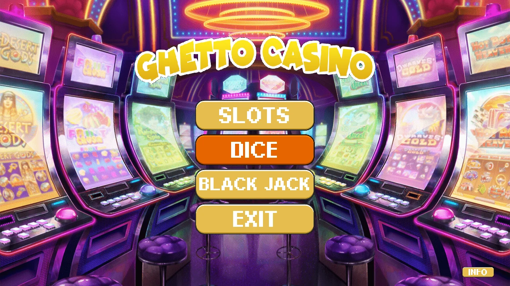
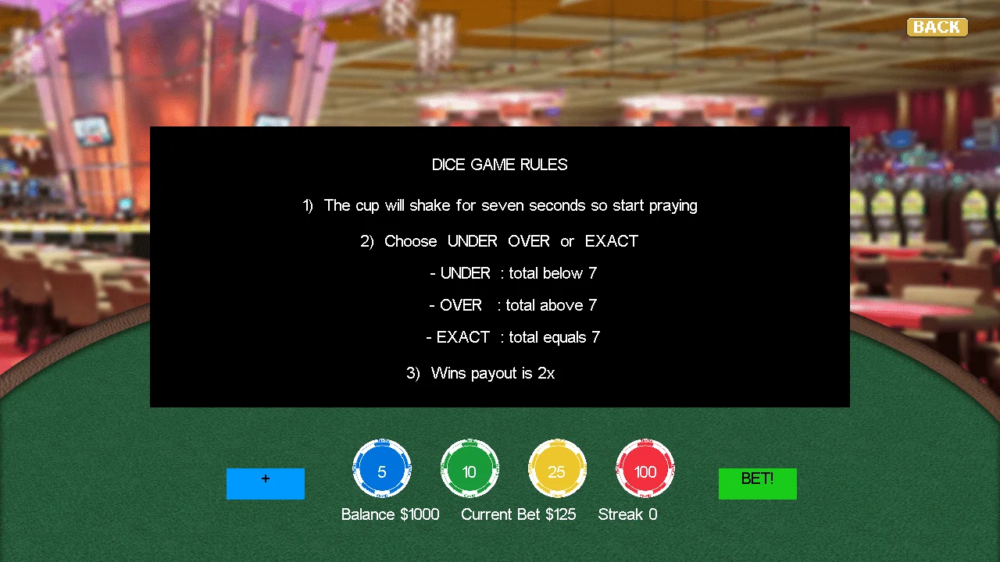

CMPS 3350 · Team project
Casino game (team project)
Ghetto Casino, a five-person team game in C++ with OpenGL and X11: slots, blackjack and dice share one chip balance, a textured menu and an animated intro. Christian wrote the dice game, where a cup shakes for seven seconds and the player bets on whether two dice total under, over or exactly 7.
What I did
- Wrote the dice game in
crodriguez4.cpp, with its state in aDicestruct (include/dice.h) and its public functions ininclude/crodriguez4.h. - Animated the cup in
Start_Dice, which slides it side to side for seven seconds beforeroll_dicepicks two dice, thenreveal_dicescores the bet, pays 2x on a win and updates the win streak. - Built the betting screen (
renderBettingUI,processBettingInput): four textured chips add or remove 5, 10, 25 or 100, a +/- toggle, a BET! button and a status line with balance, current bet and streak. - Sliced
diceSheet.png(4 by 6 faces) andchipSheet.pnginto separate OpenGL textures inloadDiceTexturesandloadChipTextures, so each die shows a random color. - Wrote the UNDER, EXACT and OVER choice buttons, the REVEAL and result screens with NEW BET and SAME BET, and an INFO button that toggles a rules overlay.
- Also wrote
renderHandsandrenderTotalsfor the blackjack table and a credits window (show_credits, C key) that opens its own X11 window in a forked child process.
What I used
- C++
- OpenGL
- X11
- Texture sprite sheets
- Game state machines
- Team development with Git
Concepts:
- Team development with Git
- OpenGL textures and sprite sheets
- Game state and UI
Libraries
| Header or module | What it is for |
|---|---|
GL/gl.h | OpenGL drawing |
GL/glu.h | GLU: OpenGL utility functions |
GL/glut.h | GLUT header |
GL/glx.h | GLX: OpenGL inside an X11 window |
X11/Xatom.h | X11 atoms (used to catch the window's close button) |
X11/Xlib.h | Xlib: opening windows, drawing and reading events (X11) |
X11/Xutil.h | X11 utility functions |
X11/keysym.h | X11 key names such as XK_Escape |
sys/types.h | System data types such as pid_t |
sys/wait.h | wait and waitpid for child processes |
unistd.h | POSIX calls such as read, write, fork, pipe and sleep |
C standard library: math.h, stdio.h, stdlib.h, string.h.
C++ standard library: algorithm, array, chrono, cmath, cstdio, cstdlib, cstring, ctime, fstream, iostream, map, random, vector.
Headers in this folder: dice.h, global.h, image.h, include/blackjack.h, include/bolayvar.h, include/button.h, include/crodriguez4.h, include/dice.h, include/fonts.h, include/global.h, include/hchen_functions.h, include/image.h, include/phil_funcs.h, include/reel.h, include/x11.h, reel.h, time.h.
Linked with -lX11 (Xlib), -lGL (OpenGL), -lGLU (GLU), -lm (math library), libggfonts.a (prebuilt library in this folder).
How to build and run
From the folder with the code:
make
./mainRequires: X11, OpenGL and GLU development files plus the GLUT header that main.cpp includes (sudo apt install libx11-dev libgl1-mesa-dev libglu1-mesa-dev freeglut3-dev), and ImageMagick, whose convert command the game runs to load its PNG images.
Snapshots
Real runs of the program, captured in a terminal or on a virtual screen.




Files
| File | What it is |
|---|---|
.gitignore | Git ignore rules carried over from the team repository. |
Makefile | Builds main from all the source files, the font library, X11, GL and GLU. |
main.cpp | Game loop, texture loading and input routing between the menu and the three games. Started from the instructor's background.cpp framework. |
crodriguez4.cpp | Christian's dice game: cup animation, betting, choice, reveal and result screens, rules overlay, blackjack hand drawing and the credits window. |
akoli.cpp | Slot machine: three textured 3D reels drawn with GLU cylinders that spin on Space and pay out chips on a match. |
bolayvar.cpp | Menu drawing and button hover/click handling, the blackjack table, chips and card drawing, the frame-by-frame team intro (t8Intro) and Esc handling. |
hchen.cpp | Logo intro with fading menu, the menu INFO screen and the blackjack rules: dealing, hit, stand, double, dealer play and payouts. |
button.cpp | Defines the menu button positions shared by the team. |
include/blackjack.h | Card and Blackjack types: the shoe, both hands, bets and game flags. |
include/bolayvar.h | Declarations for the menu and blackjack functions in bolayvar.cpp. |
include/button.h | Button class (a position) and the shared menu buttons. |
include/crodriguez4.h | Public interface of the dice game: texture loaders, input handlers and render functions. |
include/dice.h | Dice struct: cup animation values, dice values, the player's choice and the flags for each dice screen. |
include/global.h | Global class shared by all games: window size, textures, chip balance, current bet and win streak. |
include/hchen_functions.h | Declarations for the intro, info screen and blackjack logic in hchen.cpp. |
include/phil_funcs.h | Declarations for the slot machine in akoli.cpp. |
include/reel.h | Reel struct for one spinning slot reel. |
include/x11.h | X11_wrapper class declaration shared by the game files. |
images/blackjacktable.png | Blackjack table background. |
images/cardsSheet.png | Sprite sheet of playing cards. |
images/chipSheet.png | Strip of four poker chips (blue, green, yellow, red) sliced by loadChipTextures. |
images/cup.png | Dice cup on a green background that the game makes transparent. |
images/cyl_side_tex.png | Texture for the ends of the slot reels. |
images/cyl_spinner_tex.png | Texture for the slot reel axle. |
images/diceSheet.png | 4 by 6 sheet of dice faces (four colors, six faces) sliced by loadDiceTextures. |
images/dicetable.png | Background for the dice game. |
images/logo.png | Ghetto Casino logo. |
images/menu_bg.png | Menu background. |
images/menu_bg_devscreen.png | Alternate menu background that the code does not load. |
images/menu_button.png | Menu button texture. |
images/reelFaceSheet.png | Sheet of slot reel symbols. |
images/reels_tex.png | Symbol strip wrapped around each 3D slot reel. |
images/shoe.png | Card shoe drawn on the blackjack table. |
images/slot_face.png | Slot machine cabinet drawn over the reels. |
images/t8.png | Sprite sheet with the frames of the opening team intro. |


| File | What it is |
|---|---|
image.cpp | Image loader: converts a PNG to PPM with ImageMagick's convert and reads the pixels. |
libggfonts.a | The instructor's bitmap font library used for all on-screen text. |
include/fonts.h | Header for the instructor's font library. |
include/image.h | Image class used to load textures. |